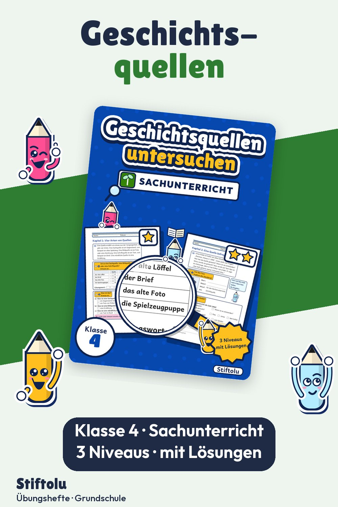

Werbung · Übungsheft von Stiftolu
Geschichtsquellen untersuchen in Klasse 4: Quellen befragen, Belege finden

Woher weiß man, wie es früher war? Aus Quellen. Das Übungsheft stellt vier Arten vor, nämlich Sach-, Bild-, Schrift- und mündliche Quellen, und übt, Fragen an eine Quelle zu stellen. Belegtes und Erfundenes zu trennen ist das dritte Kapitel. 48 Seiten für Klasse 4, mit Lösungen und Handreichung, erhältlich auf eduki.